Provided plates (14)
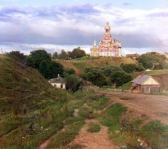
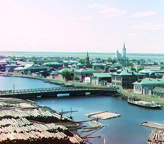
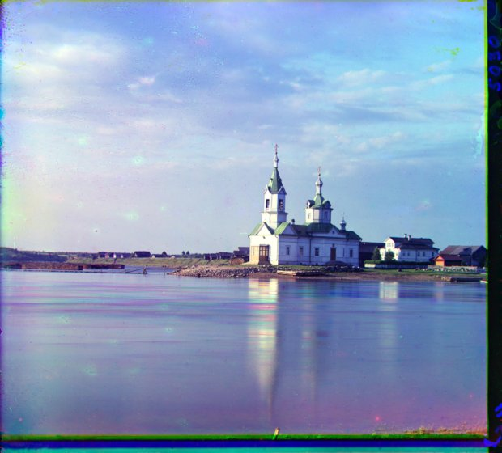
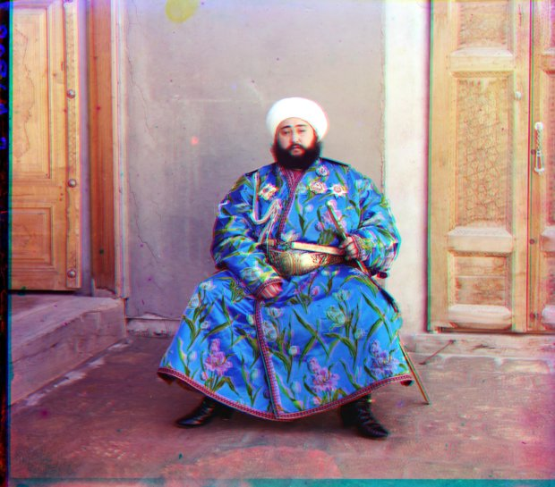
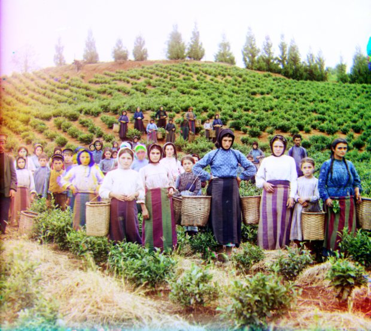
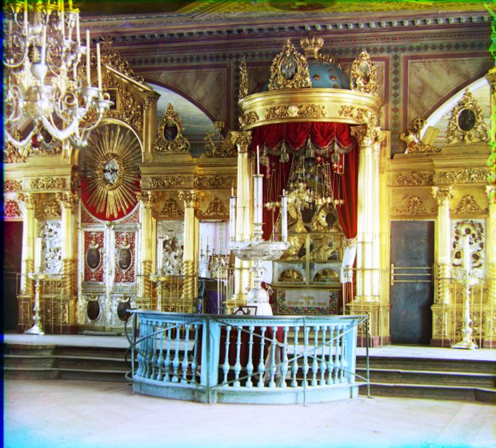
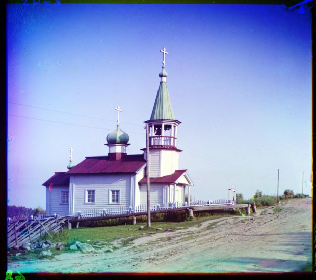
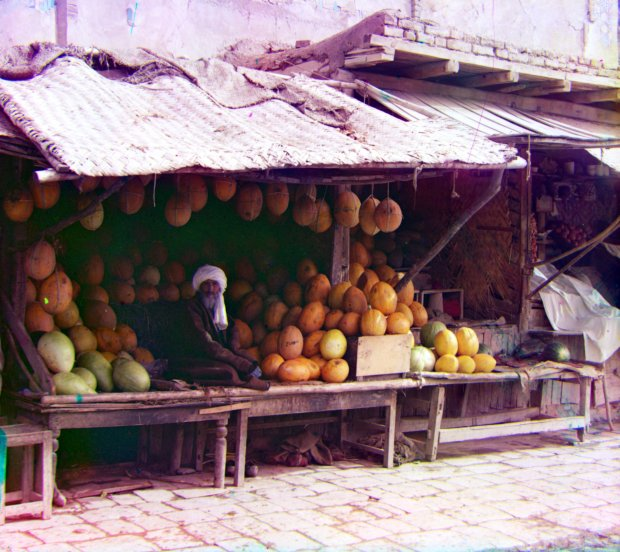
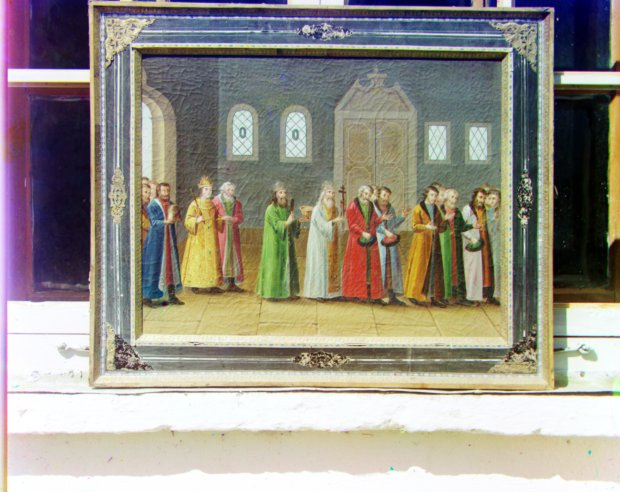
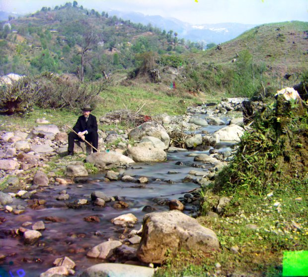
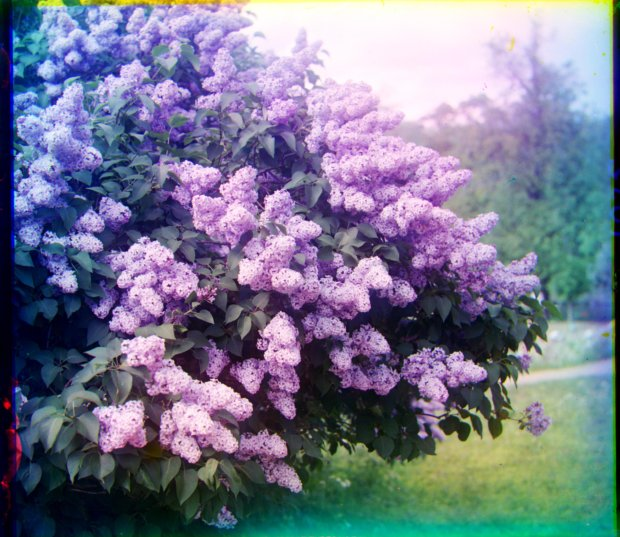
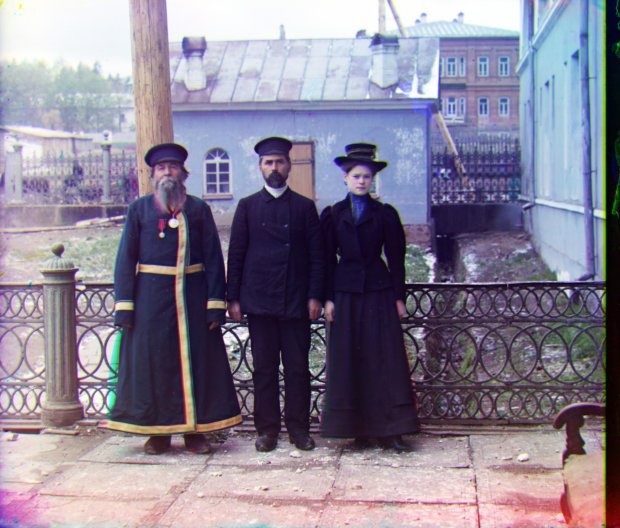
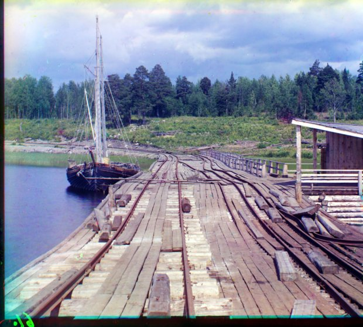
My own plates (4)
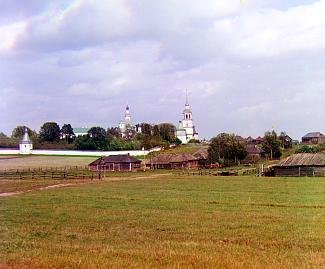

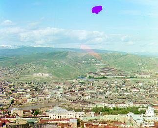

CS 180 · Project 1 · Full Gallery
Every plate from the write-up — the 14 provided (3 single-scale JPEGs, 11 pyramid TIFFs) plus the 4 I picked myself — run through the complete default pipeline: pyramid/single-scale alignment, then auto-crop → white balance → auto-contrast. (Gradient features and decorrelation stretch are opt-in per-plate extensions, not part of this default batch — see the write-up's Bells & Whistles section for where each one is worth using.)
Provided plates (14)













My own plates (4)

